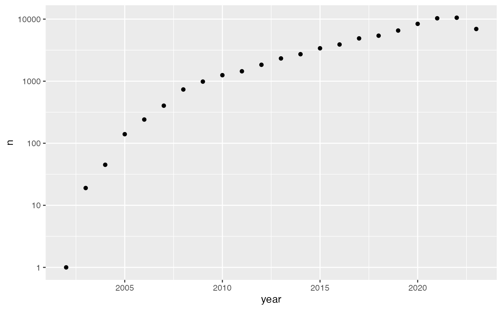

Instal and load
Install the development version of pmcbioc from GitHub with:
# install.packages("devtools")
devtools::install_github("mtmorgan/pmcbioc")Load the package with:
Retrieve and process PubMedCentral data
pmcbioc requires that the user visit the PubMedCentral web site, search for terms or citations of interested, and chooses to save the results to their local disk as an XML file. For the analysis in this document, I visited the Bioconductor web site, located the Publications page, followed the ‘PubMed Central’ link to a predefined search, and saved the results as an XML file. These steps can be automated through the NIH EUtils API, e.g., using renterez.
The XML contains full text of all articles satisfying the
query, which means that it can be quite large; 72,446 citations to the
term ‘Bioconductor’ retrieved on 2023-10-18 occupy about 8.5GB of disk
space. Suppose that the result file is pmc_result.xml, in
the current working directory.
Data processing involves four steps
- Create a DuckDB database, to be accessed using the duckdb R package.
- Parse article metadata (PubMedCentral id, title, journal, year, pmid, authors, keywords, citation PubMed ids) into tables in the database.
- Index the XML file to allow fast access to the full record of individual articles, and record the index in the database.
- Closing and perhaps renaming the database.
Database creation
Create a new DuckDB database in the current working directory. Use a temporary file name to avoid accidentally over-writing existing work.
db_file <- tempfile(tmpdir = ".", fileext = ".duckdb")
db <- pmcbioc_db(db_file)
db
#> pmcbioc_db: ./file90845f7a26f2.duckdb
#> connected: TRUE
#> read_only: FALSE
#> db_tables():Connection to a new (empty) database allows for updates
(read_only: FALSE). Connecting to an existing database is
by default read-only (read_only: TRUE); an existing
database can be opened to allow updates with the
pmcbioc_db() argument read_only = TRUE.
Article metadata
Parse metadata about each article in the XML file into the database
using xml_parse(). The arguments are the path to the XML
file, and the database created in the previous step.
## not evaluated
xml_parse("pmc_result.xml", db)This process is expensive in both time and memory. The Bioconductor
query took about 1 minute per 1000 records, and ultimately consumed
about 18Gb of memory. Processing using
XML::xmlEventParse(), with ‘XPath’ queries
used to extract metadata from each article. Details of the paths used
are visble using the (non-exported) function
## not evaluated
pmcbioc:::xml_branches(db)When the process completes, the database will contain four tables
db_tables(db)
#> [1] "article" "author" "keyword" "refpmid"XML index
The function xml_index() creates an index on the large
XML file downloaded from PubMedCentral, making it easy to query subsets
of articles for information not extracted to the database with
xml_parse(). Create and add the index with
## not evaluated
xml_index("pmc_result.xml", db)This process is faster and less memory-intensive than
xml_parse(), but still takes several minutes. On
completion, the database contains an additional table
index.
db_tables(db)
#> [1] "article" "author" "index" "keyword" "refpmid"Final steps
Remember to disconnect from the database, so any buffered data is written to disk.
db_disconnect(db)
#> pmcbioc_db: ./file90845f7a26f2.duckdb
#> connected: FALSE
#> read_only: FALSEOptionally, rename the temporary file to something permanent.
## not evaluated
file.rename(db_file, "pmc_result.duckdb")Explore our data
Start by connecting to the database. Since the database already exists, it opens as ‘read only’ so one does not have to worry about accidentally corrupting it.
db <- pmcbioc_db("~/a/github/pmcbioc/pmc_result.duckdb")
db
#> pmcbioc_db: ~/a/github/pmcbioc/pmc_result.duckdb
#> connected: TRUE
#> read_only: TRUE
#> db_tables(): article, author, index, keyword, refpmidArticle metadata
article
Use dplyr
functions to open and explore tables. Start with the
article table.
tbl(db, "article")
#> # Source: table<article> [?? x 6]
#> # Database: DuckDB v0.9.1 [root@Darwin 21.6.0:R 4.3.1/~/a/github/pmcbioc/pmc_result.duckdb]
#> id pmcid title journal year pmid
#> <int> <chr> <chr> <chr> <int> <chr>
#> 1 1 10580555 Coexpression analysis of lncRNAs and mRNA… BMC Ve… 2023 3784…
#> 2 2 10578971 Unbiased gene expression analysis of the … Bone &… 2023 NA
#> 3 3 10579997 Clinical and biological significance of c… Clinic… 2023 3784…
#> 4 4 10580377 Katdetectr: an R/bioconductor package uti… GigaSc… 2023 NA
#> 5 5 10580564 Differential transcriptome response follo… Virolo… 2023 NA
#> 6 6 10577922 Maternal adverse childhood experiences (A… Clinic… 2023 3784…
#> 7 7 10578035 Data-driven identification of total RNA e… Genome… 2023 NA
#> 8 8 10578040 Analysis of transcriptomic features revea… Genome… 2023 3784…
#> 9 9 10577904 Single-cell RNA sequencing distinctly cha… Genome… 2023 3784…
#> 10 10 10580862 Parvimonas micra, an oral pathobiont asso… Gut Mi… 2023 3784…
#> # ℹ more rows
tbl(db, "article") |>
count()
#> # Source: SQL [1 x 1]
#> # Database: DuckDB v0.9.1 [root@Darwin 21.6.0:R 4.3.1/~/a/github/pmcbioc/pmc_result.duckdb]
#> n
#> <dbl>
#> 1 72446Each row represents a result returned by the original PubMedCentral query. The fields are
-
idis an internal identifier, representing the sequence of the article in the original XML file. It is used in conjunction with theindextable. -
pmcid(PubMedCentral identifier),title,journal, andpmid(PubMed identifier) are self-explanatory. -
yearis the earliest year recorded in the PubMedCentral record. Some articles have multiple publication dates associated with, e.g., electronic publication, submission to NIH, etc.
Missing values occur when the XPath used to extract the data failed to identify relevant information. I believe that the content of the XML associated with each record is partly at the discretion of the journal.
Use the article table to plot citations as a function of
year. Start by loading the ggplot2
package
Summarize the number of publications per year. Remember to
collect() the result so that the tibble is fully
in-memory.
Plot the relationship. One row is removed, corresponding to records for which a year was not extracted from the XML. The final year is incomplete, and there is a lag between publication and indexing by PubMedCentral, so the last two points are an anomaly.
ggplot(pubs_per_year) +
aes(x = year, y = n) +
geom_point() +
scale_y_log10()
Journals with more than 100 articles mentioning Bioconductor are summarized as (the unnamed journal corresponds to records for which the XPath did not extract a name).
author
The author table associates author surname and given
names with PubMedCentral identifiers. In some instances individual
authors were not extracted (e.g., because the journal reported the
author using a format the XPath did not capture). These entries are
not reported as NA, but are simply omitted from
the table. Thus some authors do not receive credit for all their
publications.
tbl(db, "author")
#> # Source: table<author> [?? x 3]
#> # Database: DuckDB v0.9.1 [root@Darwin 21.6.0:R 4.3.1/~/a/github/pmcbioc/pmc_result.duckdb]
#> pmcid surname givenname
#> <chr> <chr> <chr>
#> 1 10580555 Xia Xiaojing
#> 2 10580555 Hou Jie
#> 3 10580555 Ren Pengfei
#> 4 10580555 Liu Mingcheng
#> 5 10580555 Wang Lei
#> 6 10580555 Wei Xiaobing
#> 7 10580555 Teng Zhanwei
#> 8 10580555 Kasianenko Oksana
#> 9 10580555 Cheng Likun
#> 10 10580555 Hu Jianhe
#> # ℹ more rows
tbl(db, "author") |>
count()
#> # Source: SQL [1 x 1]
#> # Database: DuckDB v0.9.1 [root@Darwin 21.6.0:R 4.3.1/~/a/github/pmcbioc/pmc_result.duckdb]
#> n
#> <dbl>
#> 1 746369The most prolific authors (or at least unique combinations of surname and given names) are found as:
tbl(db, "author") |>
count(surname, givenname, sort = TRUE) |>
head(100) |>
collect() |>
DT::datatable()Data inconsistencies are not easily resolved, e.g., are these all me?
tbl(db, "author") |>
filter(surname == "Morgan", givenname %like% "Martin%") |>
count(surname, givenname)
#> # Source: SQL [2 x 3]
#> # Database: DuckDB v0.9.1 [root@Darwin 21.6.0:R 4.3.1/~/a/github/pmcbioc/pmc_result.duckdb]
#> surname givenname n
#> <chr> <chr> <dbl>
#> 1 Morgan Martin 27
#> 2 Morgan Martin T. 5Publications of individual authors can be found by joining the author and article tables using PubMedCentral id.
tbl(db, "author") |>
filter(surname == "Morgan", givenname %like% "Martin%") |>
left_join(tbl(db, "article"), by = "pmcid") |>
collect() |>
mutate(
author = paste(surname, givenname, sep = ", "),
## remove "\n" in one record
title = gsub("[[:space:]]+", " ", title)
) |>
select(author, year, title, journal, pmcid, pmid) |>
DT::datatable()
keyword and refpmid
The keyword table summarizes keywords associated with
each publication.
tbl(db, "keyword")
#> # Source: table<keyword> [?? x 2]
#> # Database: DuckDB v0.9.1 [root@Darwin 21.6.0:R 4.3.1/~/a/github/pmcbioc/pmc_result.duckdb]
#> pmcid keyword
#> <chr> <chr>
#> 1 10580555 Mastitis
#> 2 10580555 lncRNA
#> 3 10580555 mRNA
#> 4 10580555 Mammary gland epithelial cells
#> 5 10580555 RNA-seq
#> 6 10578971 Fracture healing
#> 7 10578971 Fracture nonunion
#> 8 10578971 Zucker rats
#> 9 10578971 Type 2 diabetes mellitus
#> 10 10578971 fracture and of the healing
#> # ℹ more rowsKeywords are not standardized, e.g, bioinformatic and
bioinformatics are both used. Nonetheless, this provides
some insight into areas where Bioconductor is useful; an analysis could
associate keyword with year to model shifting areas of interest.
tbl(db, "keyword") |>
count(keyword = tolower(keyword)) |>
filter(n >= 100) |>
arrange(desc(n)) |>
collect() |>
DT::datatable()The refpmid table summarizes the PubMed identifiers of
citations in each article.
tbl(db, "refpmid")
#> # Source: table<refpmid> [?? x 2]
#> # Database: DuckDB v0.9.1 [root@Darwin 21.6.0:R 4.3.1/~/a/github/pmcbioc/pmc_result.duckdb]
#> pmcid refpmid
#> <chr> <chr>
#> 1 10580555 32051050
#> 2 10580555 32257646
#> 3 10580555 17936907
#> 4 10580555 35021119
#> 5 10580555 31153885
#> 6 10580555 31606213
#> 7 10580555 34406447
#> 8 10580555 30683918
#> 9 10580555 29230038
#> 10 10580555 28626066
#> # ℹ more rowsOne can ask which publications mentioning ‘Bioconductor’ are most cited by other publications mentioning ‘Bioconductor’
## FIXME: is this correct?
tbl(db, "refpmid") |>
count(refpmid, sort = TRUE) |>
right_join(tbl(db, "article"), by = c(refpmid = "pmid")) |>
arrange(desc(n)) |>
head(100) |>
collect() |>
select(n_citn = "n", title, journal, year) |>
DT::datatable()
#> Warning: ORDER BY is ignored in subqueries without LIMIT
#> ℹ Do you need to move arrange() later in the pipeline or use window_order() instead?Querying individual records
The XML records are extremely rich. Individual records can be retrieved and queried. For instance for the fifth record
tbl(db, "article") |>
filter(id == 5)
#> # Source: SQL [1 x 6]
#> # Database: DuckDB v0.9.1 [root@Darwin 21.6.0:R 4.3.1/~/a/github/pmcbioc/pmc_result.duckdb]
#> id pmcid title journal year pmid
#> <int> <chr> <chr> <chr> <int> <chr>
#> 1 5 10580564 Differential transcriptome response follow… Virolo… 2023 NAwe can use the index table to query the full XML record
using XPath to count the number references
xml_file <- "~/a/github/pmcbioc/pmc_result.xml"
tbl(db, "index") |>
filter(id == 5) |>
xml_xpath(
"count(//article/back/ref-list/ref)",
xml_file = xml_file
)
#> [1] 79The full XML of the first five records is
These records can be queried using, e.g, XPath or the
xmlChildren() and [[ of the XML package.
first_five["//article-meta//article-title"] |>
XML::xmlValue()
#> [1] "Coexpression analysis of lncRNAs and mRNAs identifies potential regulatory long noncoding RNAs involved in the inflammatory effects of lipopolysaccharide on bovine mammary epithelial cells"
#> [2] "Unbiased gene expression analysis of the delayed fracture healing observed in Zucker diabetic fatty rats"
#> [3] "Clinical and biological significance of circulating miRNAs in chronic pancreatitis patients undergoing total pancreatectomy with islet autotransplantation"
#> [4] "Katdetectr: an R/bioconductor package utilizing unsupervised changepoint analysis for robust kataegis detection"
#> [5] "Differential transcriptome response following infection of porcine ileal enteroids with species A and C rotaviruses"Final steps
Remember to disconnect from the database.
db_disconnect(db)
#> pmcbioc_db: ~/a/github/pmcbioc/pmc_result.duckdb
#> connected: FALSE
#> read_only: TRUESession information
sessionInfo()
#> R version 4.3.1 Patched (2023-10-10 r85312)
#> Platform: aarch64-apple-darwin21.6.0 (64-bit)
#> Running under: macOS Monterey 12.6.8
#>
#> Matrix products: default
#> BLAS: /Users/ma38727/bin/R-4-3-branch/lib/libRblas.dylib
#> LAPACK: /Users/ma38727/bin/R-4-3-branch/lib/libRlapack.dylib; LAPACK version 3.11.0
#>
#> locale:
#> [1] en_US.UTF-8/en_US.UTF-8/en_US.UTF-8/C/en_US.UTF-8/en_US.UTF-8
#>
#> time zone: America/New_York
#> tzcode source: internal
#>
#> attached base packages:
#> [1] stats graphics grDevices utils datasets methods base
#>
#> other attached packages:
#> [1] ggplot2_3.4.4 pmcbioc_0.0.4 dplyr_1.1.3
#>
#> loaded via a namespace (and not attached):
#> [1] sass_0.4.7 utf8_1.2.3 generics_0.1.3 spdl_0.0.5
#> [5] stringi_1.7.12 digest_0.6.33 magrittr_2.0.3 evaluate_0.22
#> [9] grid_4.3.1 fastmap_1.1.1 blob_1.2.4 rprojroot_2.0.3
#> [13] jsonlite_1.8.7 DBI_1.1.3 purrr_1.0.2 fansi_1.0.5
#> [17] crosstalk_1.2.0 scales_1.2.1 XML_3.99-0.14 textshaping_0.3.7
#> [21] jquerylib_0.1.4 duckdb_0.9.1 cli_3.6.1 rlang_1.1.1
#> [25] dbplyr_2.3.4 ellipsis_0.3.2 munsell_0.5.0 withr_2.5.1
#> [29] cachem_1.0.8 yaml_2.3.7 tools_4.3.1 memoise_2.0.1
#> [33] colorspace_2.1-0 DT_0.30 vctrs_0.6.4 R6_2.5.1
#> [37] lifecycle_1.0.3 RcppSpdlog_0.0.14 stringr_1.5.0 htmlwidgets_1.6.2
#> [41] fs_1.6.3 ragg_1.2.6 pkgconfig_2.0.3 desc_1.4.2
#> [45] pkgdown_2.0.7 pillar_1.9.0 bslib_0.5.1 gtable_0.3.4
#> [49] glue_1.6.2 Rcpp_1.0.11 systemfonts_1.0.5 xfun_0.40
#> [53] tibble_3.2.1 tidyselect_1.2.0 knitr_1.44 farver_2.1.1
#> [57] htmltools_0.5.6.1 labeling_0.4.3 rmarkdown_2.25 compiler_4.3.1